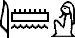

De: La Frikipedia, la enciclopedia extremadamente seria.
De: La Frikipedia, la enciclopedia extremadamente seria. De: La Frikipedia, la enciclopedia extremadamente seria.
| De la serie a quién rezarle: | |||
| Apis | |||
| |||
| ¿Quiénes lo adoran? | Antiguo Egipto | ||
|---|---|---|---|
| Área de influencia | Es el mensajero de Ptah, las corridas y un pajero mal | ||
| No puede faltarle | Una siesta de 7 horas | ||
| ¿Bueno o malo? | Buenísima | ||
| Sus poderes | muchos | ||
| Dioses y héroes amigos | Todo el mundo del rock | ||
| Dioses y héroes enemigos | La policía y los toreros | ||
| Rock egipcio al toreador | |||
«أنا إله القرف»
~ Apis rezándose a si mismo
«همبرغر بالجبنة»
~ Apis en un McDonalds de El Cairo
Es uno de los hijos de Hathor pero como no tenían un lugar donde meterlo en el panteón de los dioses le pidió a su cuñado Ptah que le diera alguna changa para que fuera un dios laborioso y no este todo el día ocioso. Ptah lo aceptó.
Al principio el toro era muy pajero para seguir las reglas del dios tecno pero Ptah se las arregló y le hizo probar su famoso incienso mágico. El dios toro empezó a alucinar y a amandarse cagadas a buena parecía un alcohólico en horas pico. Ptah se aprovechó del pedo que tenía el toro y le empezó a sacar fotos comprometedoras para chantajearlo.
El toro se recuperó de la borrachera que tenía y siguió con la negativa de ayudar a Ptah hasta que este le mostró las fotos que le saco mientras esta ebrio. Ante tal chantaje el toro aceptó trabajo para el dios. Si bien Ptah supo aprovechar a su heraldo el cual siempre era usado para que su jefe pudiera huir de los problemas de pareja que tenía y evitar que lo golpeen usando violencia doméstica. Nadie conocía al pobre Apis salvó de Ptah, sus allegados y su madre pero si no hubiera sido porque Ptah no le hubiera propuesto unirse a una banda de Rock progresivo sin esto Apis e hubiera quedado en el olvido.
La banda se llamada corridas del toro fuera del significado vulgar que tenga su nombre se hizo con el top 5 egipcio. Su fama era tan grande que el mismo Alejandro Magno escuchaba a Apis desde su palacio en Babilonia y llegó a gustarle tanto que quiso meterlo en el panteón griego pero bajo otro nombre para no joder a los sacerdotes.
Si bien la banda duró hasta la llegada de Julio César porque no le gustaba el rock. Entonces la banda se separó pero su legado cultural quedó dando nombre a lo que los gallegos llaman corridas de toro y también inspiró a Picasso en mucho de sus cuadros pero nunca pudo robarle uno.
Apis sigue trabajando para Ptah porque todavía tiene foto que lo comprometen con altos funcionarios del gobierno egipcio e italiano aunque le va gustando de a poquito.

|
Todos los veranos voy a Ibiza o a una isla griega pero ahora les toco este tema.
Este es el tema del verano que vas a bailar y cantar en todos lados. Te habla del sol de la arena y de las olas. y tiene un estribillo que se te pega y se te pega pero nunca despega, Claro que te clavo la sombrilla pero claro que te clavo la sombrilla. AH, que te clavo la sombrilla, Este es el tema, el hitazo del verano que vas a bailar y cantar en todos lados. Que siempre dice ABAJO, ARRIBA, ABAJO. y tiene un estribillo que se te pega y se te pega pero nunca despega, Claro que te clavo la sombrilla pero claro que te clavo la sombrilla. AH, que te clavo la sombrilla. Este es el tema, el hitazo del verano que vas a bailar y cantar en todos lados. Que siempre hay una parte que dice: PUNCHI PUNCHI PUNCHI que se te pega y se te pega pero nunca despega Este es el tema, EL HITAZO del verano que vas a bailar y cantar en todos lados. Porque siempre una parte piden, PALMAS PALMAS PALMAS. Y que siempre tiene un meneo SENSUAL SENSUAL Claro que te clavo la sombrilla pero claro que te clavo la sombrilla. AH, que te clavo la sombrilla. (Ajá) Claro que te clavo la sombrilla pero claro que te clavo la sombrilla. AH, que te clavo la sombrilla. (Aja, Eje) El tema del verano más peligroso que nunca |

|
| Apis y las corridas del Toro en El Tema del Verano |
|
|
I am waiting for your love,
Missing faces in my room I am waiting for your love Like looking at the moon, oh, oh Oh, emotional Devotional, Give me a greatest love, Something there is in heaven, Sometime I just can't hide, Why can't we live together now I am waiting for your love, We are playing silly game, I am waiting for your love, Leave me standing in the rain, rain, rain Oh, emotional Devotional Give me a greatest love, Something there is in heaven, Sometime I just can't hide, Why can't we live together now Devotional is my love for you |
|
| Apis y las corridas del Toro en I'm waitng for your love bitch |
| |
|---|
|  |
| |
| |
Autor(es):